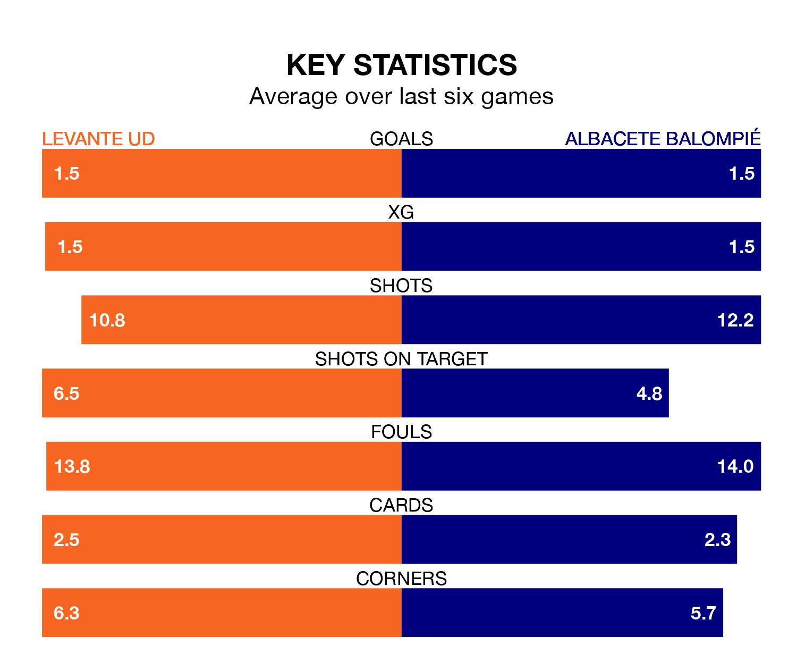

Albacete Balompié travel to Levante UD on Saturday in the Segunda División.
The visitors come into the game on the back of a draw in their last match, having tied with CD Eldense 1-1 at home, with a goal from Higinio Marín Escavy.
Levante UD also drew their last match, 2-2 against Real Zaragoza, with their goals scored by Roger Brugué Ayguadé and Fabrício do Rosário dos Santos.
In the last 10 years, Levante and Albacete have played each other on seven occasions. Levante won four of them and they drew three times.
On average, Levante UD scored 1.7 goals and Albacete Balompié 0.6 in those matches.
Their last meeting was on October 6, when Levante won 2-0 away.
With 27 goals in 21 games so far this season, Levante are scoring more than average in the league with 1.3 goals per game. And they are conceding at an average rate, letting in 26 goals at a rate of 1.2 per game.
Albacete, meanwhile, are average scorers, with 1.2 goals per game. They have conceded 1.5 goals per game.
Levante UD's Sergio Lozano Lluch is among the league's most creative players, racking up six assists in 17 appearances so far this season, and holding second spot in the Segunda División's assist charts.
For Albacete Balompié, Manuel Fuster Lázaro has set up the most goals, having laid on five assists in 21 games.
The visitors are 16th in the table after 21 games, of which they have won six and drawn seven, earning 25 points.
The home team are eight places ahead of Albacete in eighth, with eight wins and eight draws putting them on 32 points.
Levante are in mixed form in the Segunda División, with two wins and two draws from their last six games.
And also with two wins and two draws over that period, Albacete's form is identical – they have both taken eight points from 18.
Updated: 12:57, 02/01/24